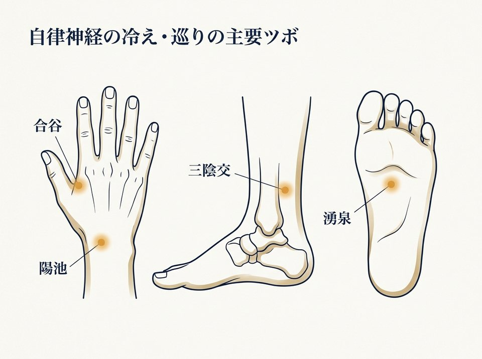

社会不安障害の鍼灸
人前や対人場面で強い不安・緊張と身体症状が出る障害です。専門治療と並行し、神門・労宮・内関等で自律神経の過緊張を和らげる補完ケアを行います。


院長YouTube解説・関連動画
社会不安障害は緊張を感じすぎて日常生活に支障が出る
仕事中に不意に焦燥感がくる、焦りや不安感で電話に出るのが怖い、会議前になると動悸が止まらない、これは脳の誤作動かもしれません。まず、脳の状態を整えることから始めてほしいです。
集中したいのに頭が真っ白になる、人前で話す時呼吸が浅くなったり手が震えたりする、大したことではないのに胸がざわざわして仕事が手につかない、などの症状は、気合や意思の問題ではありません。
そのような症状で当院に来院される方は、まず薬で対処して薬が効かなくなって困って鍼灸に来る人が多いです。
社会不安障害は、人前に出た時やある特定の状況で何かをすることになった時、緊張を感じすぎてしまい不安や恐怖を感じ、段々と人前に出るような緊張する場面を避け始める病気です。
誰でも緊張を感じることはあります。しかし、ほとんどは色々な場面を経験することで自然に過ごせるようになります。
しかし社会不安障害の場合、色々な場面を経験することでどんどん緊張を感じるようになってしまい、日常生活に支障が出るほどになります。
社会不安障害は、そのままにしておくとうつ病など精神病につながる可能性もあります。
社交不安障害の症状の特徴は、予期不安と回避行動
社交不安障害の症状の特徴は、予期不安と回避行動です。
予期不安とは、注目を集めたりや何か恥ずかしい行動をしてしまうかもしれないという強い不安や恐怖のことです。回避行動とは、そのようなことが起こるかもしれないと感じる状況を避けることです。
社会不安障害の人は、緊張を感じる状況で発汗したり手足が震えたりする症状が起こります。
そのような症状が現れることによって、周りに不信感を持たれるかもしれないという不安や恐怖を感じ始め、段々と症状が現れた時と同じ状況や行動を避けるようになるのです。
緊張を感じる状況になるとパニック発作を起こしてしまうこともあります。回避行動が悪化した場合は、学校や仕事に行くことができなくなったりうつ病を引き起こしてしまうこともあります。
社会不安障害には、限局型と全般型があります。限局型は、緊張を感じたり不安や恐怖を感じてしまう状況が1つだけの場合です。色々な状況で緊張や不安や恐怖を感じてしまう場合が全般型です。
全般型は社会不安障害の症状が重い場合がほとんどです。
注目されることへの強い恐怖: 人前で話す、発表する、会話するなど、他者の注目を集める状況に置かれると、激しい不安や恐怖を感じます。特に、自分が他者からどう見られているか、批判されていないかといったことを過剰に気にします。
恥をかくことへの恐れ: 他者の前で失敗したり、恥ずかしい思いをすることを極度に恐れます。例えば、「言葉が詰まってしまうかもしれない」「変なことを言って笑われるかもしれない」といった具体的な恐怖が頭をよぎります。
先取り不安: 社交的なイベントや会合がある前から、「うまくいかないかもしれない」「また失敗してしまうかもしれない」といった先取りした不安を感じ、イベントの前日や数日前から緊張や不安に苛まれることがあります。
自分の行動に対する過剰な意識: 自分の言葉遣いや表情、態度などが他者にどう映っているかを過剰に気にし、自分の行動をコントロールしようとします。これにより、自然な振る舞いが難しくなり、ぎこちなくなってしまいます。
他者の評価に対する過敏性: 他者からの些細な表情や態度、言葉に過度に反応し、「今、相手が怪訝な顔をした」「あの人は自分を馬鹿にしているのかもしれない」と考え、それがさらなる不安を引き起こします。
改善法は、薬と不安を感じる状況に対して対処法を身につけること
社会不安障害を改善する方法は、薬と不安を感じる状況に対しての対処法を身につけることです。薬と対処法を身につける方法の両方を合わせて改善を行うとより効果的であると言われています。
社会不安障害を改善する際には、主にSSRIを使います。SSRIは脳の中のセロトニンのバランスを整える働きがあります。
SSRIの効果が現れるまでの期間には個人差がありますが、約2週間から8週間かけて少しずつ効果が現れると言われています。
SSRIと合わせてベンゾジアゼピン系抗不安薬が使われることもあります。ベンゾジアゼピン系抗不安薬は即効性があるため補助的に使われることが多いです。
他にも、震えや動悸、発汗などの症状を和らげるために降圧薬のβ遮断薬が使われることもあります。
不安を感じる状況に対しての対処法を身につける方法は、色々あります。不安や恐怖を感じることに対しては思考パターンを変えることで改善を行い、回避行動に対しては緊張感を和らげることで改善を行います。
例えば、自分の行動が周りに不信感を持たれているかを改めて考え直す機会を作り実際に確認することで不安や恐怖を和らげることにつなげたり、不安や恐怖を感じる状況を作り体験して少しずつ慣れ回避行動を和らげることにつなげたりするのです。
強い緊張感: 社交的な場面で強い緊張を感じ、体が硬直したり、肩や首に力が入ることがあります。これにより、体全体がぎこちなくなり、普段通りの行動が難しくなります。
手や声の震え: 特に、人前で話す場面では、手が震えたり、声が震えることがあります。これにより、「震えているのを見られたくない」といったさらなる不安が生じ、悪循環に陥ることがあります。
過度な発汗: 緊張や不安が強まると、手のひらや額、背中に汗をかきやすくなります。これが気になり、さらに不安感が増してしまうことがあります。
顔が赤くなる: 人前で話したり、注目を浴びると、顔が赤くなってしまい、それが恥ずかしくてさらに緊張するという悪循環が生じます。「赤くなったらどうしよう」という恐れが、さらなる赤面を引き起こします。
心臓がドキドキする: 社交的な状況に直面すると、心拍数が急激に上がり、胸が締め付けられるような感覚を覚えます。これにより、さらなるパニック感を引き起こし、状況を避けたくなる衝動に駆られます。
息切れや息苦しさ: 緊張すると息が浅くなり、呼吸が速くなります。これにより、息切れや息苦しさを感じ、「このままでは倒れてしまうのではないか」といったパニックに近い感覚を覚えることがあります。
脳の誤作動を優しくリセットするセルフケア
4秒鼻から吸って6秒口で吐きましょう。
吐く時間を長くすることで副交感神経が高まることで脳の警報を緩めていくことができます。呼吸の吐く方をを意識して1日3回行いましょう。朝昼晩できれば最高です。
②前頭前野の活性
手を膝の上で２〜3分擦って、擦り終えたら手のひらをおでこのこめかみに1分当て続けましょう。
これはドイツの振動医学を応用したセルフケアです。人間は調子の良い時の周波数と調子が悪い時の周波数が違います。気功師などが行う手当では悪いところを手でなおす手法があります。調子が悪い時の周波数を施術者の調子が良い周波数に変えることで効果があると言われています。
思考の司令塔である前頭前野の過剰な興奮を手の周波数に変えるのです。脳が興奮しているため、興奮を手の周波数に当てて落ち着かせることで脳の暴走を止めましょう。一緒に呼吸をすると効果的です。
これは、気功で使われるもので内気功といいます。気功師が人に与える気功は外気功といい、自分のための気功を内気功といいます。
③内関のツボ押し
内関は手首の内側の皺から下３cmにあるツボで動悸や不安感を和らげるツボです。ツボの取り方にはコツがあります。手でつるを作るように指を合わせて内側に力を入れると2つの腱が出ます。この腱の間で手首の真下から３cmのところに取りましょう。
押し方は親指で1分圧迫することです。このツボは、吐き気止めにもよく使われていて爪を立てて押すと吐き気が止まることもあります。
改善が遅れると社会との関わりが減ることもある
社会不安障害は、本人も悩みを多く抱えてしまいがちな病気です。性格が弱い、気持ちの問題、とすることは本人を苦しめてしまうことにもなります。
社会不安障害は、正しい知識をもつことが大切です。不安なことがある場合は、すぐに専門医に相談に行き、周りも支えてあげることが必要です。
改善が遅れると社会との関わりも減ってしまいます。早めに改善することが大切です。
・認知行動方法
認知の歪みを修正する: 社交不安障害に非常に効果的な方法です。まず、自分の思考パターンを観察し、どのような場面で不安や恐怖を感じるかを記録します。次に、「自分は必ず失敗する」「他人は自分を批判している」といった否定的な思考を特定し、それを現実的かつ論理的な思考に置き換える練習を行います。
暴露法: 不安を感じる状況に少しずつ慣れていくために、徐々に不安を引き起こす状況に身を置く練習をします。例えば、最初は少人数の会話に参加し、次にもう少し大きなグループで話すなど、段階的に不安な状況に慣れていくことで、恐怖感を和らげます。
・マインドフルネス
今ここに集中する: マインドフルネスは、現在の瞬間に意識を集中し、過去や未来にとらわれない心の状態を作ることを目指します。呼吸や身体の感覚に意識を向け、思考や感情を客観的に観察することで、不安な思考に巻き込まれにくくなります。
瞑想の実践: マインドフルネス瞑想を日常的に行うことで、思考や感情に対する過剰な反応を抑え、リラックスした状態を保つことができます。毎日10〜15分間、静かな場所で瞑想を行うことで、不安感のコントロールがしやすくなります。
▼ 詳しく知りたい項目だけタップして開けます（全項目の医学解説を収録）
01. 原因とメカニズム
なぜ症状が起きるのか・鍼灸の作用機序を読む
▼
01. 原因とメカニズム
なぜ症状が起きるのか・鍼灸の作用機序を読む
社会不安障害は、脳の扁桃体が過剰に反応し前頭葉のブレーキが効きにくくなる神経回路の働きに加え、生まれ持った気質、過去の失敗体験、生育環境や対人ストレスなどが絡み合って発症すると考えられています。予期不安と回避行動が続くと社会との関わりが減り抑うつを併発しやすいため、心療内科・精神科での薬物療法や認知行動療法を基本に、身体の過緊張を緩めることが大切です。
なぜ鍼灸で改善へ向かうのか？（作用機序の図解）
社会不安障害に対する鍼灸は、体性-自律神経反射による交感・副交感神経の切替機序を通じて、お体本来の回復力を引き出します。
首肩・みぞおち・手足の過緊張ポイントへ、交感神経を刺激しすぎない優しい刺激を行います。
体性-自律神経反射を通じて脳幹の迷走神経核へ働きかけ、心拍変動（HF/SDNN）を整えます。
過剰なコルチゾール分泌や過覚醒状態を落ち着かせ、深い呼吸と入眠スイッチを引き出します。
「活動（昼）」と「休息（夜）」のメリハリが戻り、動悸・不眠・倦怠感の波が穏やかになります。
02. よくあるお悩み
このような症状はありませんか？（4項目）
▼
02. よくあるお悩み
このような症状はありませんか？（4項目）
- ✓人前で話す・書く・食事をする場面で強い恐怖や予期不安がある
- ✓緊張すると発汗、手や声の震え、赤面、動悸、息苦しさが出る
- ✓不安な場面を避けるようになり仕事や学業に支障が出ている
- ✓頭が真っ白になりやすくパニックや気分の落ち込みも心配だ
03. 当院の施術アプローチ
施術の進め方・改善のポイントを見る
▼
03. 当院の施術アプローチ
施術の進め方・改善のポイントを見る
04. ツボ詳細・セルフケア一覧
不眠・うつ・不安・自律神経失調の全身ツボ図解（6穴）
▼
04. ツボ詳細・セルフケア一覧
不眠・うつ・不安・自律神経失調の全身ツボ図解（6穴）
実際の施術ではお一人おひとりの体質・症状に合わせて選穴しますが、不眠症・抑うつ・不安障害・パニック・自律神経失調の睡眠・心身ケアの臨床でよく用いられる代表的なツボの目安です。
| ツボ名 | 位置の目安 | 主な狙い | セルフケアの注意点 |
|---|---|---|---|
| 百会（ひゃくえ） | 頭頂部の中央 | 脳の過覚醒・考えすぎによる緊張の鎮静 | 就寝前に指の腹で5秒ほど優しく押して深呼吸します。 |
| 印堂（いんどう） | 左右の眉間の真ん中 | 入眠スイッチの切り替え・不安感や焦燥感の緩和 | 目を閉じて軽く触れるだけでも副交感神経が優位になりやすくなります。 |
| 安眠（あんみん） | 耳の後ろの出っ張った骨の斜め下のくぼみ | 入眠困難・中途覚醒・首の緊張緩和 | 枕に当たる首の後ろを温めるとより緩みます。 |
| 内関（ないかん） | 手首の横ジワから指3本分肘寄りの中央 | 胸のざわざわ・動悸・予期不安の鎮静 | 不安を感じたときのセルフケアとしても心強いツボです。 |
| 神門（しんもん） | 手首の横ジワの小指側のくぼみ | 不眠・精神疲労・ストレス応答の安定化 | 心療内科・精神科のお薬は必ず主治医の指示通り継続してください。 |
| 三陰交（さんいんこう） | 内くるぶしの上から指4本分上 | 足元の冷え改善と睡眠リズムの定着 | お風呂上がりの優しい指圧やレッグウォーマーが有効です。 |
05. 医学的根拠・国際査読論文（PubMed / Cochrane）
科学的エビデンス・出典リンク一覧（3件）
▼
05. 医学的根拠・国際査読論文（PubMed / Cochrane）
科学的エビデンス・出典リンク一覧（3件）
国際的な医学データベース（PubMed・Cochrane等）で報告されている自律神経失調・不安・ストレス・動悸領域の代表的な査読済み鍼灸研究をまとめています（標準治療との併用や研究上の限界を含めて正確に掲載）。
| 年・研究デザイン | 対象・規模 | 主な結果 | 限界・出典 |
|---|---|---|---|
| 2025年 メタ解析 | 全般性不安障害（GAD）14 RCTs（n=968） | シャム鍼比で不安尺度（HAMA・GAD-7）および睡眠（PSQI）が有意に改善。 | 効果量は中等度でプロトコル標準化が課題。 Front Psychiatry (PMID: 41312341) |
| 2025年 メタ解析 | 自律神経・心拍変動（HRV）10 RCTs（n=744） | 副交感神経指標（HF・RMSSD）の上昇と自律神経バランス調整を示唆。 | 測定条件のばらつきあり。 Front Neurosci (PMID: 41230507) |
| 2023年 メタ解析 | 手技鍼 vs シャム鍼（自律神経）9 RCTs | 自律神経反応の調整作用を報告。 | 短期評価が中心で長期臨床転帰は要検証。 Complement Ther Med (PMID: 36494036) |
参考文献・出典
- 2025年 メタ解析（全般性不安障害（GAD）14 RCTs（n=968））— Front Psychiatry (PMID: 41312341)
- 2025年 メタ解析（自律神経・心拍変動（HRV）10 RCTs（n=744））— Front Neurosci (PMID: 41230507)
- 2023年 メタ解析（手技鍼 vs シャム鍼（自律神経）9 RCTs）— Complement Ther Med (PMID: 36494036)
06. よくある質問（FAQ）
よくあるご質問を見る（2件）
▼
06. よくある質問（FAQ）
よくあるご質問を見る（2件）
Q. 心療内科での薬物療法や認知行動療法と鍼灸は併用できますか？
はい、社会不安障害の治療は専門医による薬物療法や認知行動療法が基本です。鍼灸は動悸や過緊張など身体面の負担を和らげる補完ケアとして併用いただけます。
Q. 緊張して施術中も落ち着けるか不安です。
静かな環境で体調やご不安を確認しながら、無理のない刺激量で進めますので初めての方も安心してご相談ください。
あわせて読まれる関連疾患（自律神経のお悩み）
入眠困難や中途覚醒などが続き日中の不調を招く状態です。自律神経の過緊張を鎮め、心身が休息しやすい環境を補完的に整えます。
特定の場面や人の前で話せなくなる不安関連の状態。専門医や環境調整を最優先に、神門・労宮などを用いた穏やかな自律神経ケアを行います。
繰り返す発作への予期不安や過緊張に対し、医療機関での治療を前提に自律神経と呼吸リズムを整える補完ケアを行います。
長年の努力や昇進の限界を感じた後に無気力・抑うつが続く状態。専門医のケアを基本に、神門・気海等で自律神経と気力の土台を整えます。
あらゆる場面で発話が困難になる状態。精神科・専門医の診断と気長な支援を最優先とし、主治医許可下で自律神経の過緊張を穏やかに整えます。
昼食時に一人になることへの強い不安や対人プレッシャーで心身が緊張する状態。必要に応じた相談と並行し、膻中等で自律神経を整えます。
CLINICAL RECOVERY CASES
✨ 実際の臨床改善事例・回復経過を見る
銀座本院をはじめ各院での実際の改善事例を症状別に絞り込んでご確認いただけます。
おひとりで悩まず、まずはご相談ください
銀座本院・川口・大宮・横浜・博多・田無の各院でご予約を承っております。